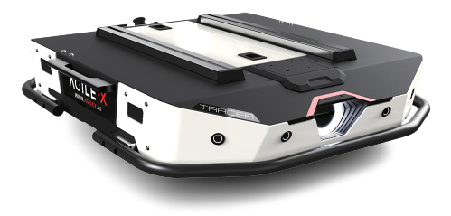

AgileX TRACER
The AgileX Robotics TRACER high-speed shuttle AGV is a great solution for indoor autonomous logistics and warehousing applications. The two-wheel differential drive powered by two 150W brushless servo motors allows TRACER to carry a payload of 100kg for up to 4 hours. TRACER’s independent rocker arm independent suspension gives it the ability to traverse obstacles as tall as 10mm and slopes as steep as 8° with a minimum ground clearance of 30mm. With its ability to rotate in place, its low profile, and its steel body, TRACER is a great solution for your logistics platform needs. The flat design of the body provides a huge payload capacity. The two-wheel drive puts the universal wheels in motion, which can perform differential rotation and freely shuttle in the indoor environment. It is additionally equipped with swing arm independent suspension which leads to easy surmounting of small obstacles. Open-source packages are available for C++ and ROS for secondary development.
What’s Here
- Getting Started - These guides will walk you through the setup process for your TRACER.
- Operation - These guides will details concepts related to the operation of the TRACER.
- Specifications - Contains specification information for the TRACER and related hardware.